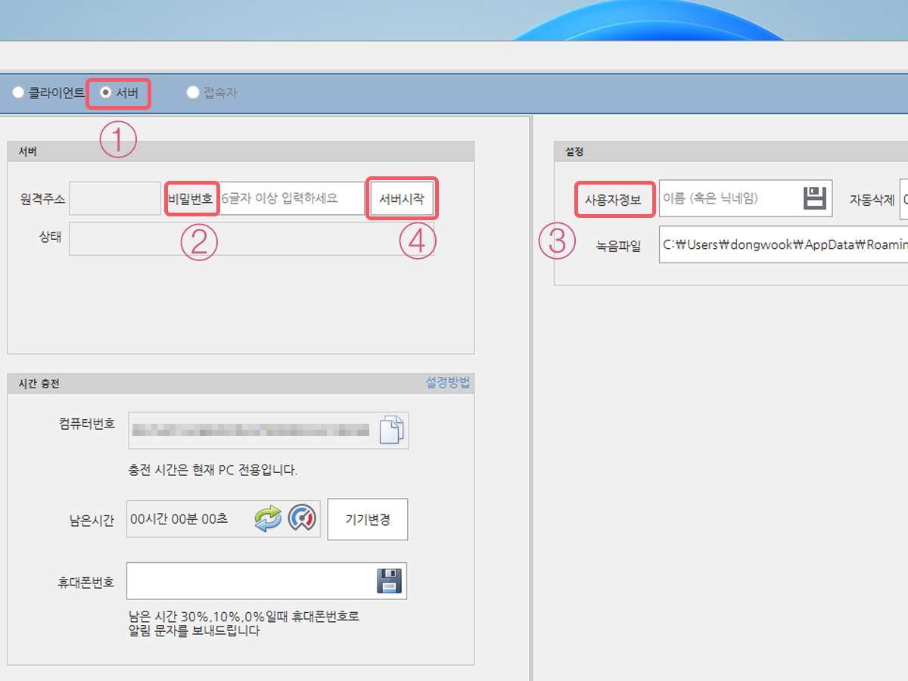
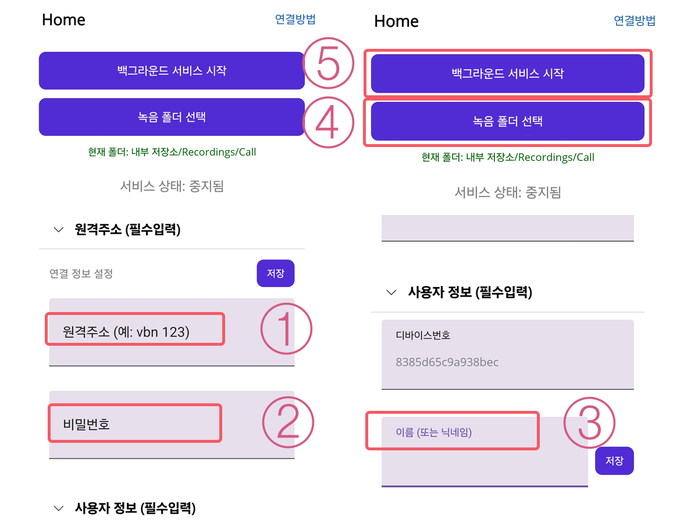

Step 1
프로그램 설치하기
PC 프로그램과 스마트폰 앱을 모두 설치해야 연결됩니다.
2
PC 프로그램 설정

-
1
서버모드 클릭프로그램 상단의 '서버모드'를 선택하세요.
-
2
비밀번호 입력보안을 위해 6자리 이상의 비밀번호를 설정하세요.
-
3
사용자 정보(이름) 입력 중요: 앱의 사용자 정보와 정확히 일치해야 알림을 받습니다.
-
4
서버 시작 버튼 클릭설정이 완료되면 서버를 시작하세요.
-
5
원격 코드 발급 완료 6자리 원격코드와 테스트 시간 20분이 부여됩니다.
3
스마트폰 앱 설정

-
1
원격 코드 입력PC에서 부여받은 6자리 코드를 입력하세요.
-
2
비밀번호 입력PC에서 설정했던 비밀번호를 동일하게 입력하세요.
-
3
사용자 정보 입력PC에 입력한 이름과 똑같이 입력해야 합니다.
-
4
녹음 폴더 선택 통화 녹음 파일이 저장되는 폴더를 지정하세요.
Recordings/Call -
5
서비스 시작'백그라운드 서비스 시작' 버튼을 누르세요.
-
6
최초 연결 승인PC 화면에 뜨는 승인 요청을 수락하면 연결됩니다.